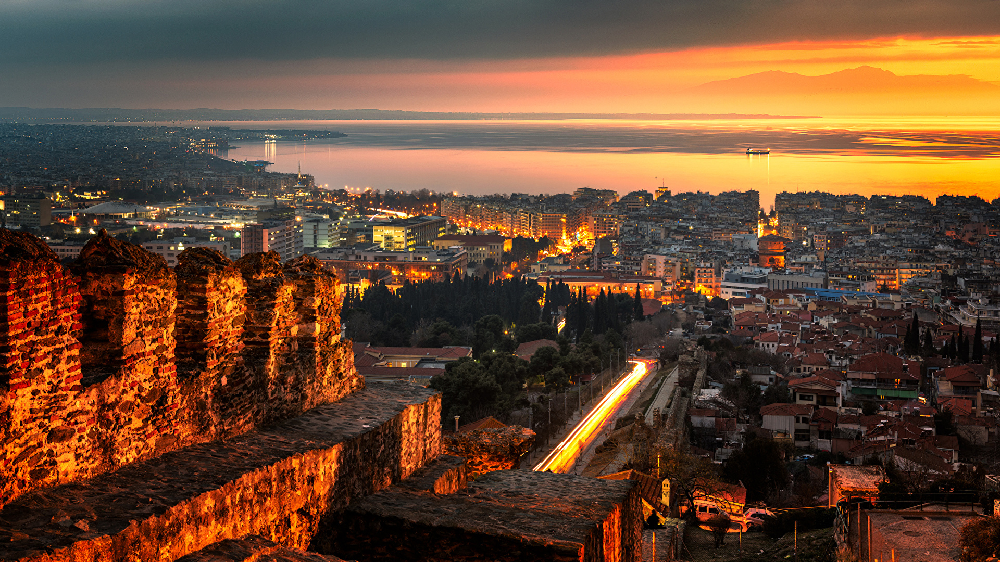
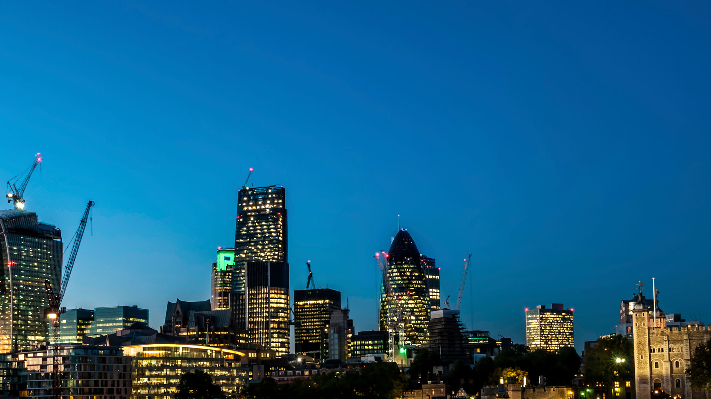

Letovanja
Letujte po veoma pristupacnim cenama u zemlji ili inostranstvu.
- AKTUELNA PUTOVANJA
- 01.06 - LIMA - 9 dana
- 07.06 - KUBA - 6 dana
- 14.06 - JAMAJKA - 4 dana
- 21.06 - VENECIJA - 14 dana
- 28.06 - TESALONIKI - 15 dana
- 05.07 - MOSKVA - 12 dana
- 11.07 - MADRID - 9 dana
- 17.07 - SICILIJA - 16 dana
- 23.07 - PARIZ - 10 dana
- 29.07 - BUDVA - 11 dana
- 04.08 - LISBON - 14 dana
- 09.08 - LONDON - 17 dana
- 14.08 - HURGADA - 12 dana
- 19.08 - ISTANBUL - 15 dana
- 24.08 - NJU JORK - 25 dana
- 29.08 - AMSTERDAM - 7 dana
- 31.08 - SARAJEVO - 8 dana
- 01.09 - ZAGREB - 10 dana
- 03.09 - LJUBLJANA - 5 dana
- 05.09 - PODGORICA - 16 dana
- 08.09 - SKOPLJE - 12 dana
250 €

LIMA - 9 dana
200 €
KUBA - 6 dana
150 €
JAMAJKA - 4 dana
300 €
VENECIJA - 14 dana
550 €

TESALONIKI - 15 dana
660 €

MOSKVA - 12 dana
450 €

MADRID - 9 dana
500 €

SICIJLIJA - 16 dana
320 €

PARIZ - 10 dana
420 €
BUDVA - 11 dana
550 €

LISBON - 14 dana
350 €

LONDON - 17 dana
240 €

HURGADA - 12 dana
280 €
ISTANBUL - 15 dana
1250 €

NJU JORK - 25 dana
300 €
AMSTERDAM - 7 dana